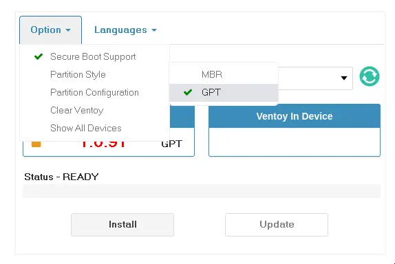
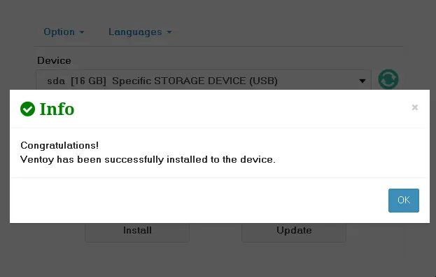
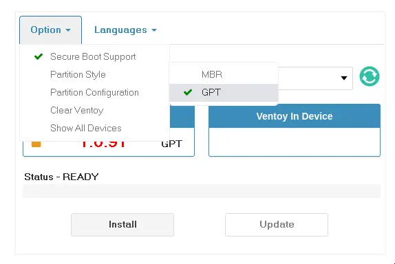
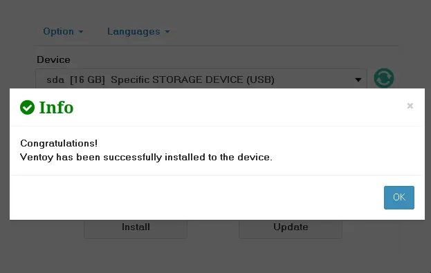
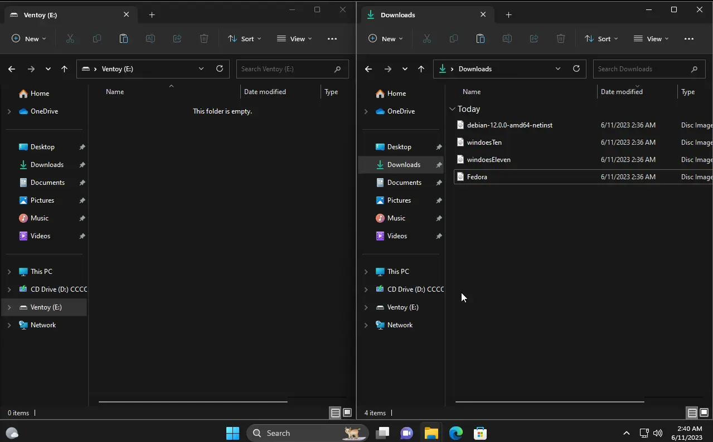
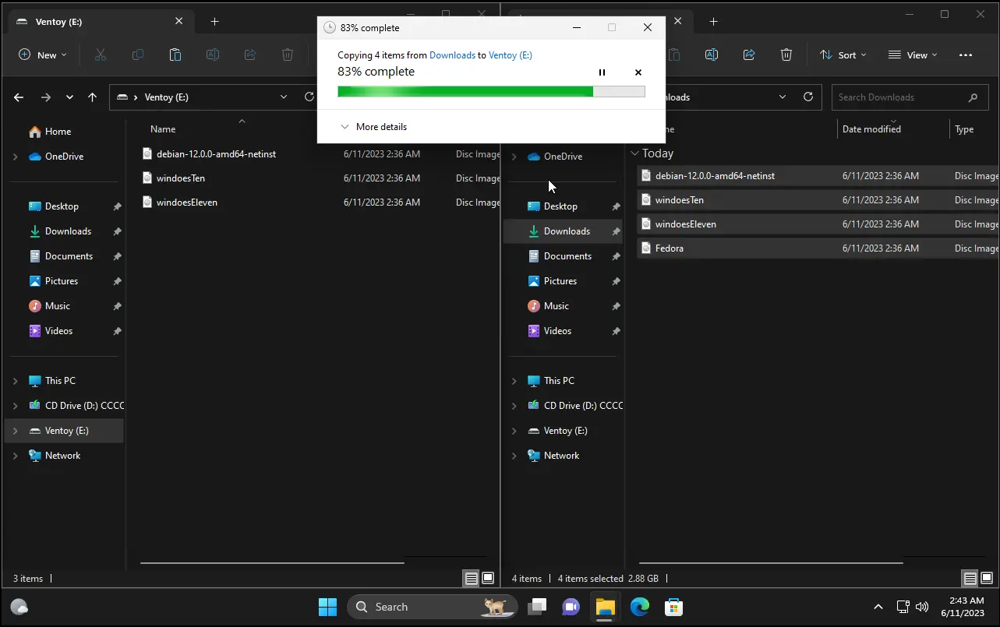

Installing your operating system
You will have to follow five steps in order to install an operating system.
Disclaimer
Firstly, I'm not responsible for any damage caused by using this software.
Secondly, I'm biased towards x86_64 and Workstation images of standard releases with a Desktop Environment pre-installed. The less you have to configure, the better. Server images and other architectures may be available on their official sites.
1. Preparing your usb
Download Ventoy and format your usb with it. Then copy the ISO(s) you need from here (excepting for macOS).It is extremely recommended you test the ISO in a VM and/or do some basic research to make sure the OS will cover your needs.
If you don't know what distro to choose, take the test or simply choose a random distro.
2. Choose your Operating System


3. Copy files
Download Ventoy and format your usb with it. 
Then copy the ISO(s) you downloaded into your USB.

4. Install the system
This is the tricky part and the point of no return. Make sure you have backed up your data.5. Configure the system
-
Microsoft Windows®
Open Windows Powershell as Administrator and paste
-
GNU/Linux®
Open the terminal and paste